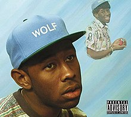
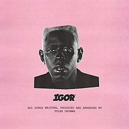

Tyler Gregory Okonma
(Los Angeles, 6 de março de 1991), mais conhecido pelo seu nome artístico Tyler, the Creator, é um rapper, compositor, produtor musical, produtor de videoclipes e designer norte-americano. Nascido em Ladera Heights, ele ganhou destaque como o líder e co-fundador do coletivo de hip hop alternativo Odd Future, tendo produzido músicas para quase todos do grupo. Tyler cria toda a arte para os lançamentos do grupo e disse em uma entrevista com o apresentador de rádio DJ Semtex, que projeta toda a roupa do grupo e outras mercadorias também. Como artista solo, Tyler lançou uma mixtape e cinco álbuns de estúdio, muitas vezes responsável por quase ou toda a produção dos mesmos.
Discografia:
Bastard
Bastard é o mixtape de estreia do rapper Tyler, The Creator, membro do grupo de hip hop Odd Future. O álbum foi inteiramente produzido por ele e foi lançado pela primeira vez em 25 de dezembro de 2009, e posteriormente re-lançado em 25 de dezembro de 2010.
bastard
Goblin
Goblin é o primeiro álbum de estúdio do rapper estadunidense Tyler, The Creator. Foi lançado em 10 de maio de 2011 através da gravadora XL Recordings. A produção do álbum veio quase inteiramente do próprio Tyler, juntamente com as contribuições de outro membro do grupo de rap Odd Future Left Brain.
goblin
Wolf
Wolf é o segundo álbum de estúdio do rapper e produtor musical norte-americano Tyler, the Creator, lançado a 2 de Abril de 2013 através das editoras discográficas Odd Future Records e RED Distribution sob distribuição da Sony Music Entertainment. Wolf tem uma sonoridade completamente diferente dos trabalhos anteriores do artista, uma vez que Bastard (2009) e Goblin (2011) apresentavam um conteúdo mais violento e agressivo, enquanto este álbum apresenta um som baseado em produção e temas diferentes. O álbum apresenta participações vocais dos cantores Frank Ocean, Mike G, Domo Genesis, Earl Sweatshirt, Left Brain, Hodgy Beats, Pharrell Williams, Casey Veggies e Erykah Badu. A produção de todas as canções do disco ficaram a cargo de Tyler, the Creator.

domo23
Cherry Bomb
Cherry Bomb é o terceiro álbum de estúdio do rapper americano Tyler, the Creator. Foi lançado em 13 de abril de 2015 pela Odd Future Records. Em 9 de abril de 2015, o álbum foi anunciado informalmente no iTunes, junto com o lançamento de duas faixas. A produção foi feita inteiramente pelo próprio Tyler, com contribuições adicionais doguitarrista do Incubus Mike Einziger.
deathcamp
Flower Boy
Flower Boy (alternativamente intitulado Scum Fuck Flower Boy) é o quarto álbum de estúdio do rapper norte-americano Tyler, the Creator. O álbum foi lançado em 21 de julho de 2017, pelo selo da gravadora Columbia Records. Produzido inteiramente por Tyler, o álbum traz vocais convidados de uma série de artistas, como Frank Ocean, ASAP Rocky, Lil Wayne, Kali Uchis, Steve Lacy, Estelle, Jaden Smith e Rex Orange County.
see you again
Igor
Igor (estilizado em caixa alta; IGOR) é o quinto álbum de estúdio[a] do rapper norte-americano Tyler, The Creator, lançado em 17 de maio de 2019 pela Columbia Records. Igor foi produzido inteiramente por Tyler, o álbum segue o lançamento de 2017 de Flower Boy. Apresenta participações especiais de Playboi Carti, Lil Uzi Vert, Solange, Kanye West e Jerrod Carmichael, além de vocais de apoio de Santigold, Jessy Wilson, Roux, CeeLo Green, Charlie Wilson, Slowthai, Pharrell, entre outros.

earfquake
Call me if you get lost
Call Me If You Get Lost é o sexto álbum de estúdio do rapper , compositor e produtor musical norte-americano Tyler, the Creator, lançado a 25 de junho de 2021 pela Columbia Records. Dois singles precederam seu lançamento; "Lumberjack" e "WusYaName", em 16 e 22 de junho de 2021, respectivamente. O álbum apresenta participações não creditadas de 42 Dugg, Ty Dolla Sign, YoungBoy Never Broke Again, Lil Wayne, SZA, Teezo Touchdown, Domo Genesis, Brent Faiyaz, Fana Hues, Daisy World, Lil Uzi Vert e Pharrell Williams.
lumberjack
Prêmios:
2011
•MTV Video Music Awards,
como melhor artista.
•MTV2 Sucker Free Awards,
como Estreante do Ano e
artista Mais Seguido.
2019
•Wall Street Journal Innovator Awards,
como inovador de música do ano.
2020
•Grammy awards,
como melhor álbum de rap (Igor).
Golf Wang:
Golf Wang é uma marca de streetwear americana fundada em 2011 pelo músico americano Tyler, o Criador. O nome Golf Wang é uma expressão de seu coletivo musical baseado em Los Angeles, Odd Future Wolf Gang Kill Them All (OFWGKTA) ou Odd Future para abreviar, do qual ele foi co-fundador. Golf Wang é conhecido por sua estética visual colorida. A marca desde então se expandiu além de sua afiliação Odd Future e se estabeleceu na indústria da moda. É co-projetado por Tyler, o Criador e Phil Toselli. A marca oferece roupas, calçados por meio do Golf le Fleur , joias e outros produtos. "Férias 1991", o primeiro lookbook da marca, foi lançado em 11 de dezembro de 2011.